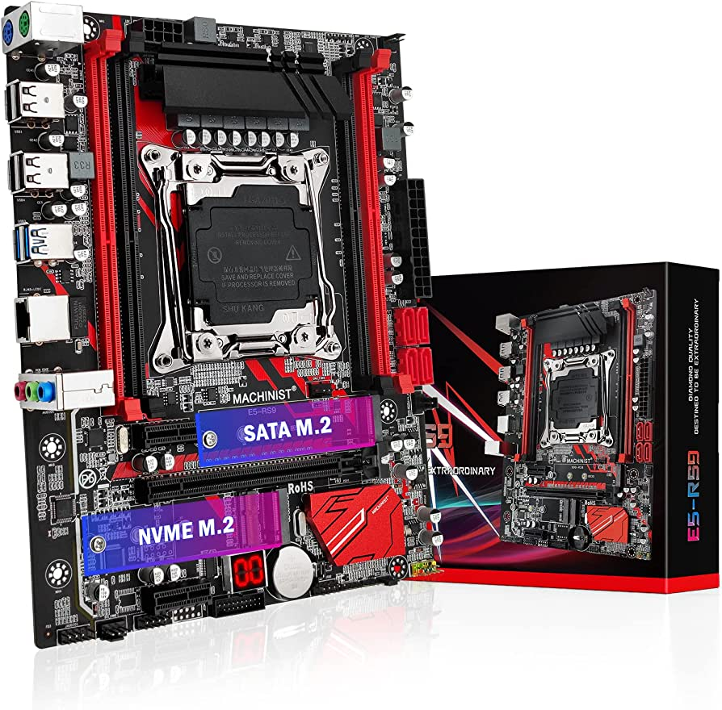

La placa base, también conocida como tarjeta madre, placa madre o placa principal (motherboard o mainboard en inglés), es una tarjeta de circuito impreso a la que se conectan los componentes que constituyen la computadora. En muchos lugares de habla hispana se usa la palabra inglesa con el artículo en femenino. Es una parte fundamental para montar cualquier computadora personal de escritorio o portátil o algún dispositivo. Tiene instalados una serie de circuitos integrados, entre los que se encuentra el circuito integrado auxiliar (chipset), que sirve como centro de conexión entre el microprocesador (CPU), la memoria de acceso aleatorio (RAM), las ranuras de expansión y otros dispositivos.
Una placa base típica admite los siguientes componentes:

Conectores de alimentación
Véase también: Fuente de alimentación
Conectores de la fuente de alimentación de tipo ATX2 para PC: (1) mini molex para FDD. (2) Molex universal: para dispositivos IDE, HDD y unidad de disco óptico. (3) para dispositivos SATA. (4) para tarjetas gráficas de 8 pines, separable para 6 pines. (5) para tarjeta gráfica de 6 pines. (6) para placa base de 8 pines. (7) para CPU P4, combinado para el conector de la placa base de 8 pines a 12V. (8) ATX2 de 24 pines.
Por uno o varios de estos conectores de alimentación, una alimentación eléctrica proporciona a la placa base los diferentes voltajes e intensidades necesarios para su funcionamiento.
Puertos de CPU
Artículo principal: Zócalo de CPU
Placa base para computadora personal de escritorio mostrando sus componentes típicos e interfaces. Este modelo fue fabricado por Foxconn en 2007 usando la disposición microATX, una de las más utilizadas para computadoras personales.
El zócalo (socket) de CPU es un receptáculo que encastra el microprocesador y lo conecta con el resto de componentes a través del bus frontal de la placa base.
Si la placa base dispone de un único zócalo para microprocesador, se denomina monoprocesador. En cambio, si dispone de dos o más zócalos, se denomina placa multiprocesador.
Ranuras de RAM
Véase también: Ranura de expansión
Las placas bases constan de ranuras (slots) de memoria de acceso aleatorio, su número es de 2 a 6 ranuras en una misma placa base común.
En ellas se insertan dichas memorias del tipo conveniente dependiendo de la velocidad, capacidad y fabricante requeridos según la compatibilidad de cada placa base y la CPU.
Chipset
Artículo principal: Chipset
El chipset es una serie o conjunto de circuitos electrónicos, que gestionan las transferencias de datos entre los diferentes componentes de la computadora (procesador, memoria, tarjeta gráfica, unidad de almacenamiento secundario, etcétera).
El chipset, generalmente se divide en dos secciones:
Las nuevas líneas de procesadores de escritorio tienden a integrar el propio controlador de memoria dentro del procesador